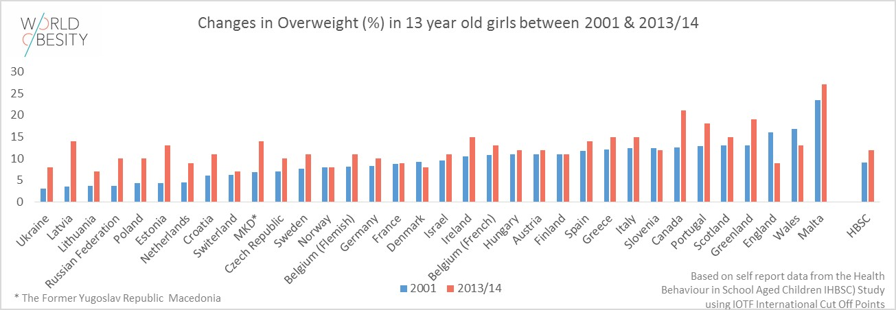

World Obesity - A Visualization of an Overweight Population
By: Joseph Galante

The World Obesity visualization is run by the World Obesity Federation. They represent professional members of the scientific, medical and research communities from over 50 regional and national obesity associations.
Mission: "To lead and drive global efforts to reduce, prevent and treat obesity."
Interactive Obesity Visualization Map|  | Aside from the Interactive World Obesity map, the site holding the visualizaion also has multiple other sorces with meaningful statistics and charts. For instance this chart shows a comparison of overweight girls age 13 in different countries betweent the years 2001 and 2013. |
| The World Obesity Federation created these charts, tables, and graphs based on data provided by medical professionals around the world. The data is then compiled and represented in the form of these graphics. |
Comparing Obesity Levels From Different Countries
If you are looking to compare men and women obesity rates inside a single country, this visualization is great! However, it is a bit lacking when comparing men and women obesity rates in different countries.
Not Everything is Included
| Only states with obesity rates above 25% are included in the U.S. statistics. A more complete chart would have all 50 states, showing more contrasting and meaningful ratios including those under 25%. |
Things Done Well
| The heat map is a nice addition to the visualizatios in the World Obesity Federation data collection. The contrast in color from country to country helps to show the magnitude of the countries that are more greatly affected by the obesity epidemic. |
Purpose of Data
Raising awareness of the obesity epidemic is a noble cause which the World Obesity Federation is working to spread. By turning data into interesting graphics and interactable visualizations, the World Obesity Federation is creating simple ratios which people will understand.